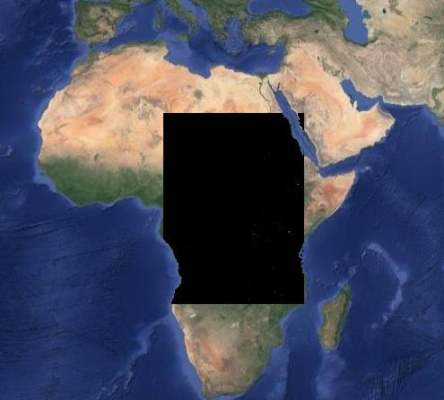
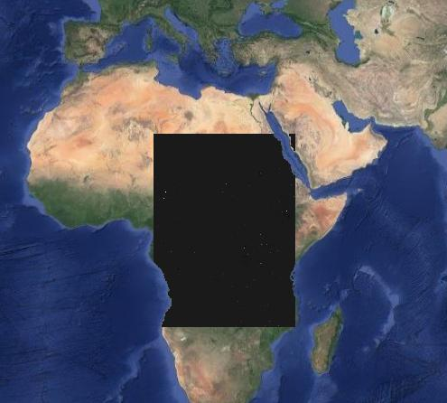
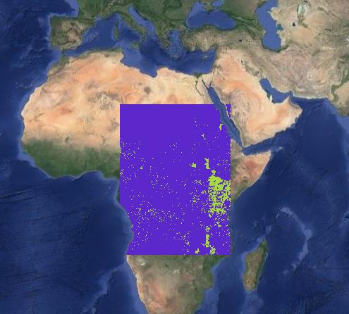
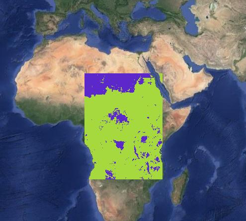
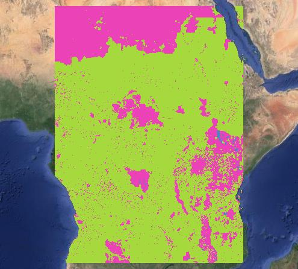

About the project
During the life a person is not only a number, everyone is important and can make the difference .
World population maps provide global information, evidence-based analytics, and knowledge on human presence on the planet.
The ultimate goal of these maps is to ensure that every person is mapped and counted within critical operations such as policy making and disasters response. Due to the importance associated with world population maps, the assessment of accuracy and reliability of these datasets is key to inform any users on benefit and limitations deriving from their usage.
SubGroup12 project devolped by Matteo Corbetta
Step 1
Raster Data Preprocessing
After the download of the whole maps of GHS and WorldPop, in this step I clipped and aligned the two rasters map to obtain the area of interests of my work.
Then i adjusted the null values of the two maps, to correctly represent the data: in fact, GHS-POP presents null values on seas and oceans, while WorldPop present null values also over inland water bodies, where GHS-POP has value 0 that stands for not populated. So, to have the datasets harmonized I have performed this adjustment.
The output of this step consists of preprocessed GHS-POP and WorldPop in GeoTiff format.
GHS-POP map
WorldPop map

Step 2
Raster Data Preprocessing (Intercomparison)
In this step there are three most important things: the map of differences between GHS and WorldPop and the statistics related to this map, and the correlation factor related to the tiles.
Using "Raster calculator" and inserting the specific expressions, I compute the map of differences between GHS map and WorldPop map and then using a Grass plugin (r.univar) the basics statiscs related to the map. Then to compute the correlation factor for each tile, I clipped each raster for each tile and for each of them I use the command "r.covar" to compute the correlation factor that I added then to the group of tiles vector. Lastly, I compute also the correlation factor for the whole maps and save it in another Geopackage
The output of this step are: Map of differences (GHS-POP - WorldPop) for the whole group sub-area in GeoTiff format, and its summary statistics as CSV or TXT file; Group tiles vector layer in GeoPackage format with the correlation values inthe attribute table (computed between GHS-POP and WorldPop maps for each tile) and the correlation factor for the whole map.
Difference map

Step 3
Preprocessing data for validation
In this step I reclassify WorldPop and GHS-POP to obtain thematic maps or built/not built areas: here where the pixel has a value equal to 0, it is assigned the value 1 (blue part), to denote that the area is not built; instead when the pixel has a value greater than 0, it is assigned the value 2 (green part), to denote that the area is built.
Then I styled the maps to represent the unique values: this is important to correctly do the following steps
Using "Raster calculator" I put the expression to compute the difference map between the two reclassified maps
The difference map has the following scenario:
The outputs of Step 3 are: Reclassified GHS-POP and WorldPop in GeoTiff format and Map of differences (GHS-POP - WorldPop)+1
GHS-POP map reclassified

WorldPop map reclassified

Difference map reclassified

Step 4
Validation of data
In this step I used both the plugin AcATaMa and the Python plugin named "Accuracy assessment and sampling.py". With the first I create the sampling scheme by adding 200 point for the classification initially for the GHS map; after that, I have the sampling points on the map and using the base map of Bing and Google, I did the classification by identifying the Urban or Not Urban areas with the comparison of the view of two maps. So at this point, I have the classified points on the GHS map with the error matrix associated, I repeat the operation for the other map but usiing the Python plugin instead and having directly the output for error matrix and accuracy associated to WorldPop map. I re-use the Python plugin also for GHS map and compare the results with the ones obtained with AcATaMa to check if they are coherent.
The difficuties here was for the plugin AcATaMa which has a bug and the output obtained at the end of the process is a bit confused when saved as csv file. Another thing to pay attention is to correct identify the areas because there could be problems due to the quality of image, the weather (it could be the presence of clouds in satellite images) and the type of construction of buildings in the area taked into account.
The outputs of this step are: error matrices and associated accuracy indexes as CSV or TXT file for GHS-POP and for WorldPop validation; Vector layer of classified sampling points in GeoPackage format with 3 attributes containing respectively the photo-interpreted classes, the class of reclassified GHS-POP and the class of reclassified WorldPop for each point.